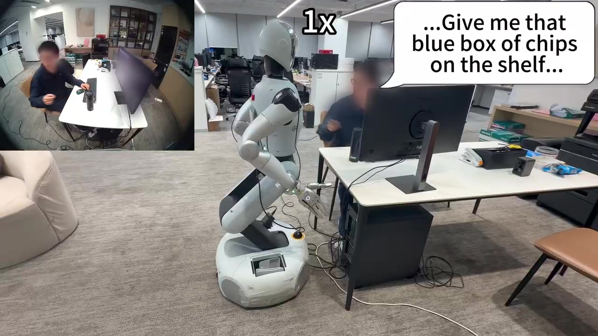
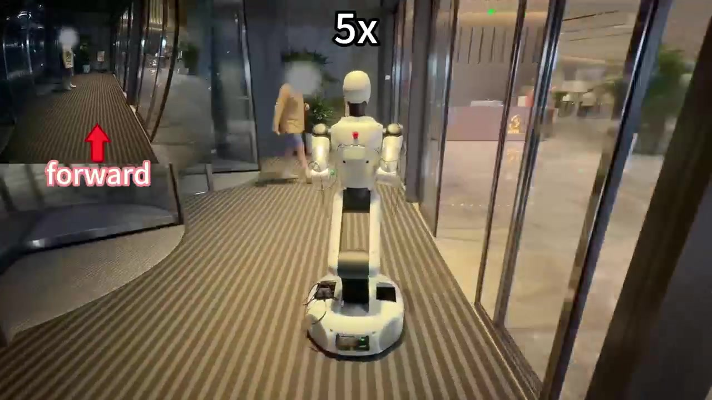
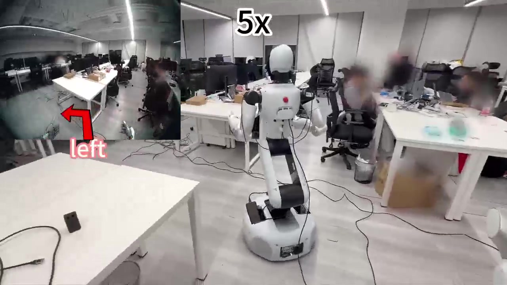

Dexterous mobile manipulation is essential for robots to perform useful tasks in complex, unstructured environments. However, existing systems face two challenges. First, navigation remains too coarse for downstream manipulation, which often requires a precise base position and approach orientation rather than merely reaching a meter-scale goal region. Second, navigation and manipulation are commonly trained in isolation, lacking an interactive feedback loop that enables the two capabilities to co-evolve. These limitations prevent current systems from reliably solving practical, long-horizon dexterous mobile-manipulation tasks. To address them, we introduce Nav4Manip, a bidirectionally coupled co-evolution system for long-horizon dexterous mobile manipulation. Our framework trains its navigation model, Nav4Manip-N, in three stages: multi-task co-tuning learns navigation behavior and manipulation-aware affordance prediction; rejection sampling fine-tuning (RFT) rejects low-quality policy-generated paths and fine-tunes the model on retained manipulation-successful trajectories; and reinforcement learning from AI feedback (RLAIF) uses execution-grounded counterfactual preferences to further improve navigation decisions. To support this framework, we establish the Nav-N-Manip benchmark and construct Nav4Manip-Pairs from benchmark rollouts, providing large-scale paired navigation–manipulation trajectories and rollout-derived affordance supervision. Extensive experiments on established VLN benchmarks and Nav-N-Manip demonstrate state-of-the-art performance, while real-world evaluations show that Nav4Manip completes diverse dexterous mobile-manipulation tasks.
Real-world evaluations show that Nav4Manip completes diverse dexterous mobile-manipulation tasks.

Real-world demonstration

Real-world demonstration

Real-world demonstration
Navigation and dexterous manipulation in simulation (4× speed).
First-person navigation rollouts, including instruction following and object-goal navigation.
First-person grasping rollouts in simulation.
Navigation rollouts on R2R.
Prompt: Walk until you reach the brown dresser with the vase on top of it, turn right, take a left and walk through the first doorway, stop immediatly after the doorway.
Prompt: Exit the laundry room and turn left. Walk towards the curio cabinet and turn left again. Enter the bedroom and walk past the dresser. Exit through the door to the left and wait near the sink.
Prompt: Go straight until you get to the frame on the wall of the teddy bear with the balloons saying "welcome" then turn right and go straight until you get to the room and wait in the entrance.
Navigation rollouts on RxR.
Prompt: We're facing some armchairs and a couch. Let's turn to our right and go straight. And go down the stairs. On this floor we should be able to see a white open door. Go through the open door. We are in a bathroom and we can stop here.
Prompt: We're going to start by looking at some paintings and a white sofa. We're going to turn out heads slightly to the right, and see a clock. Let's walk towards the clock. As we're now standing in front of the clock, let's turn our heads slightly to the right, and walk towards the small pathway between the kitchen and the living room. Now, as we're standing between the living room and the kitchen area, we're going to walk to the large cabinets that are in the corner of the room below some paintings. As we're standing in front of it, we're going to turn our heads to the right, all the way, and we're going to walk towards the small chair with some cushions that's in front of us. We should now be standing in the living room in front of the mat. We're going to turn to the right and walk towards the middle of the entire room: the kitchen, the living room, and the dining area. This will be our destination.
Prompt: You are facing a fireplace. You are going to turn around and you are going to hop over the left side of the couch going towards the picture on the wall. Once there you are going to take a step towards the corner of the island on your right. And then you are going to turn left and go thru the walkway. You are going to move forward down this hallway. You are going to pass a window on your right. And then you are going to turn into the last room on your left, you will see a washer and dryer. You are going to step onto the rug in there and then you are done.
Navigation rollouts on VLNVerse.
Prompt: Walk forward through the doorway, out of the bathroom area and past the washing machine on your left and the double vanity on your right. Continue straight through the narrow passage lined with white cabinets on both your left and right sides. Turn right at the end of the passage, entering a long hallway with the cabinets now on your left. Walk straight down the hallway, passing a large framed picture on your right. Continue straight, passing an ornate mirror on your right, and then enter the open area, keeping the white cabinet with glass doors on your right. Turn left to enter the living room, passing a white console on your left, and stop in front of the TV console with the large window and two chairs directly ahead of you.
Prompt: Walk forward into the hallway, leaving the bedroom area on your left. Walk straight down the hallway. Turn left into the doorway to enter the closet. Walk straight through the closet, with the dark shelves and cabinets on your right. At the end of the closet, turn left to enter the bathroom. Walk straight into the bathroom, passing the toilet and vanity on your right, and stop inside the shower stall in front of the window.
Prompt: Enter the living room through the doorway, keeping the sofa on your left and the TV on your right. Turn right into the adjacent hallway. Walk straight down the hallway with patterned wallpaper, then turn right at the end to enter the bedroom. Walk past the bed on your left and stop in front of the window.